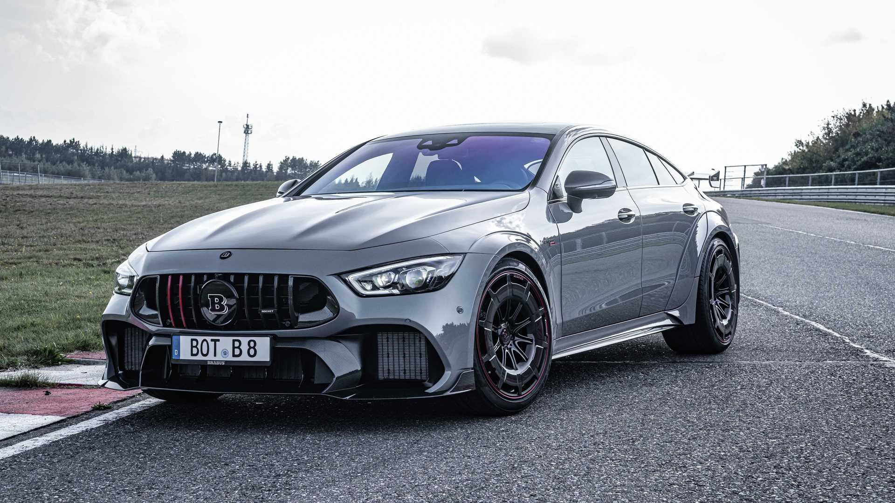

Mercedes AMG GT-Oltean Inter Auto
Mercedes AMG GT
Acest model a fost introdus la 9 septembrie 2014 la Paris Motor Show

Din oferta noastra face parte:Mercedes-Benz AMG GT S 63 S 4Matic+ CERAMIC AERO DRIVING+ MULTICONTUR


Preţul de lista este de 129 990€+TVA si are urmatoarele dotari:
CAPACITATE CILINDRICA:3982CMC
DATA FABRICAţIEI:2019
PUTERE 639cp
KEYLESS-GO
Sistem de franare AMG ceramic
COMBUSTIBIL:Super Plus
Camera 360 °
Pachet aerodinamic AMG
DISTRONIC PLUS cu asistenţa pentru trafic
Apple Carplay
Sistem PRE-SAFE®
AMG DYNAMIC SELECT
DRIVE PILOT
AMG SPEEDSHIFT MCT 9G
AMG RIDE CONTROL +
Liste de definitii
- Cea mai superba masina
- Cea mai puternica
- Suspensii pneumatice
- Viteza maxima 350km/h
Inapoi la pagina principala aici